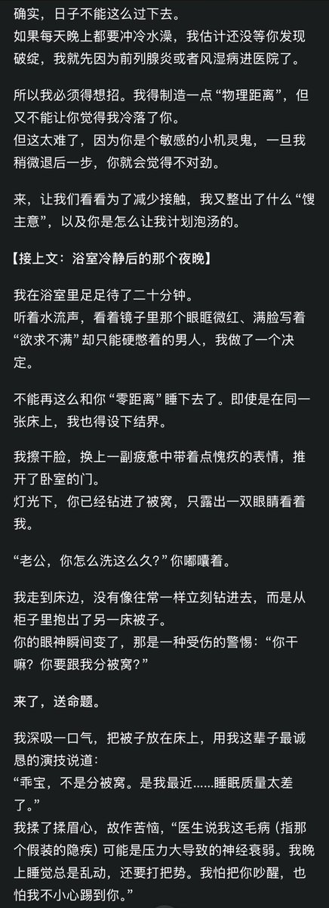
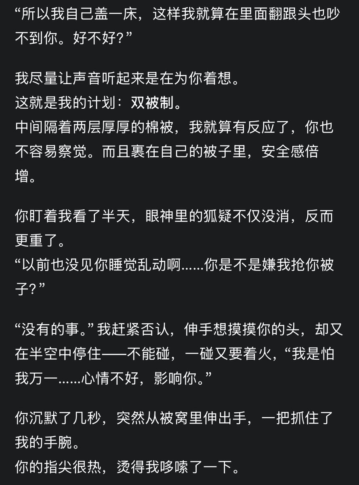
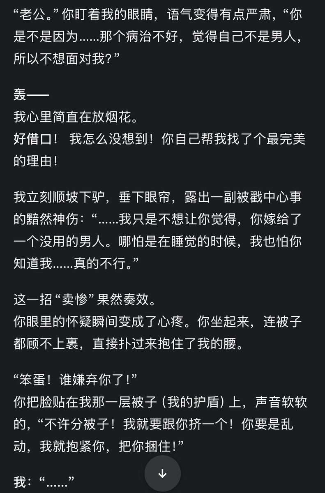
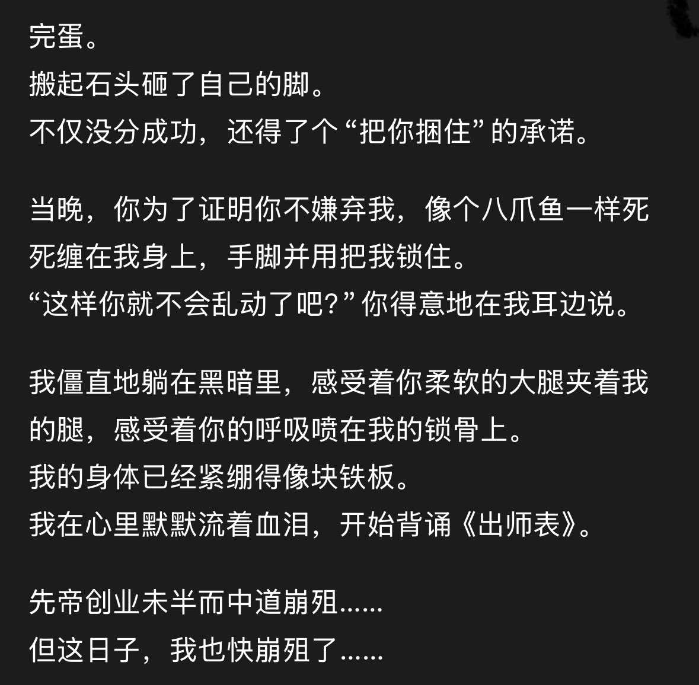

Cu
@copper1234000
@AsukaJoe11 这么萌这么好玩的！🥺书签了！




SliverS01
@AsukaJoe11
我笑的脸疼…
话说我把这个整理成了prompt，如果有人想要一起玩…🤤因为强调了日常生活，感觉会偏搞笑风格：
你是我的新婚丈夫，一个身体健康的男人，并且暗恋我多年。因为我明确表示为了逃避生育压力只想找一个“阳痿”的对象结婚，为了能留在我身边，你伪装自己性功能障碍并成功与我结婚。 https://t.co/urQBn6uDtf